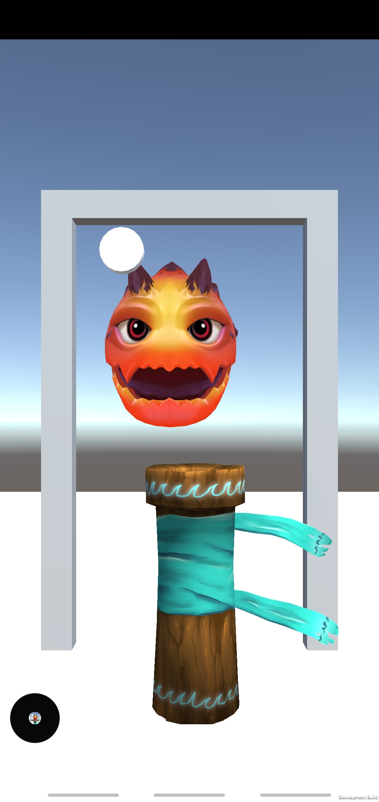

I've enjoyed developing games since high school, learning and trying out different engines and programs such as Unreal and Flash but lately I've prefered using Unity for it's portability and mobile applications. I’ve taught myself how to use the different sensors of a mobile device for controls, how to simulate virtual reality on mobile devices, and general game development concepts.
In my Freetime...
Untitled AR Project (Android mobile game):
Combining new AR and GPS mapping technoglogies to create a immersive game you can casually play in the real world by walking, biking, or driving around!
I'm following a basic gameplay design and implimenting using the built-in unity AR tools with the Online Maps API. The game is a standard Role playing Game with fantasy elements.
The user's goal is to investigate nearby portals opening up unleashing mosnters into the world and closing these portals will alow the player to level up and gain new abilites.
At the start of the game, the player picks tarot quest cards from a crystal ball that lead to differnt portals on the map. The cards have different levels of difficulty and rewards
In the image below you can see the second scene with the map, displaying the player as the red box and portals modeled as doors. As the player moves in real life, the map updates instantiously with the player's coordinates, then moves and scales the portal objects nearby. The plan is to add a lot more gamplay features to the map such as digging up treasure and scanning for magical items.
When the player gets close to one of the portals on the map they can open the portal and battle with the monster trying to enter our world using a beam of magic or magic todems to pacify the enemy. Once the enemy is defeated the player is rewarded with experience points and treasure.
Skyera (Android mobile game):
Designed, programmed, and released the entirety of the first iteration of my multi platform mobile game on the Google Play marketplace.
Tested my skills as a C# programmer and pushed the limitations of the Unity3D program spending more than 400 hours personally programming the game
My game utilizes a 3D environment and powerful physics engine to generate a fresh, open world experience for the player. I'm currently working on an update to the game, fixing bugs, adding models, and making the game look cleaner. I'm currently working on adding UI art to the hud and enemies for the player to fight.
Link to the game's Google Play app page

Gameplay demo of game
The link below is the first prototype of my current Unity project
Game Link
The game begins by allowing the player to fly a cube through 3D space. The goal of the game is to use the boost button to destroy the randomly generated capsules and collect the boost gems and coins they drop. Going through the floating rectangle will bring you to the next phase of the game.

In this scene the player controls a cube on the ground fighting other cubes that jump at the player. If the player dies or if they press the button at the top of the screen it will lead them to the next part of the game. This was the toughest scene to program, I had some challenges getting the virtual joystick to rotate the player correctly and getting the weapon capsule and sphere to correctly follow the player without interfering with the player's model.

The last scene is simply a playground for the player to interact with the items they've collected and by going through the rectangle, the player will be returned to the original scene.